Euclidean distance is an intuitive measure of distance.
The greater the distance, the less related two data points are.
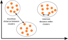
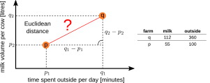
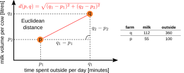
When observations have more than three attributes, intuitive visualization is difficult. Example Euclidean distance with 4 dimensions:
The Euclidean distance between two points d(p, q) can be generalized to any number n of dimensions:
For observations with a high number of attributes, cosine similarity is suitable. Why? → see "Curse of Dimensionality" later in the lecture! Source: inspired by LearnDatasci, Cosine Similarity.
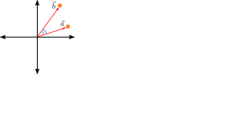
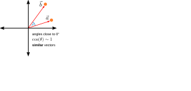
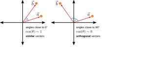
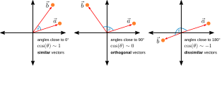
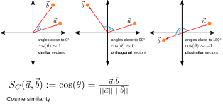
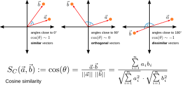
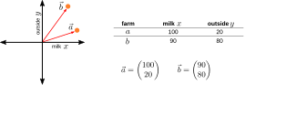
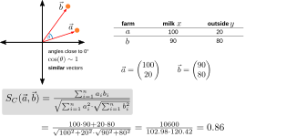
Attribute has more than two possible values? → One-hot encoding first.
Binary attributes
Numbers
- To apply cluster analysis, we need to establish a measure for the distance or similarity of observations to each other.
- Distance measures for numbers
- Euclidean Distance
- Cosine Similarity
- Pearson Correlation
- Distance measures for binary attributes
- Jaccard Similarity
- Simple Matching Coefficient
- Russel & Rao Coefficient